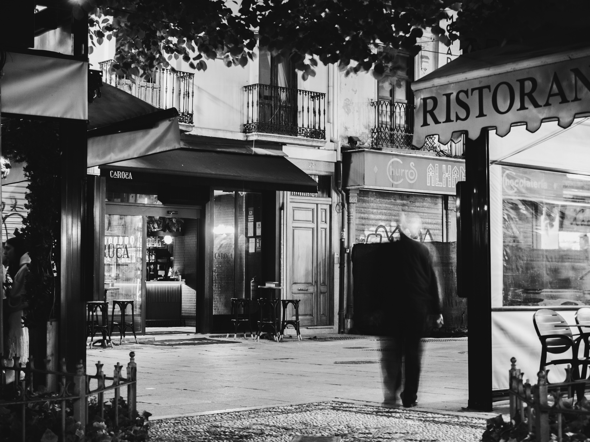
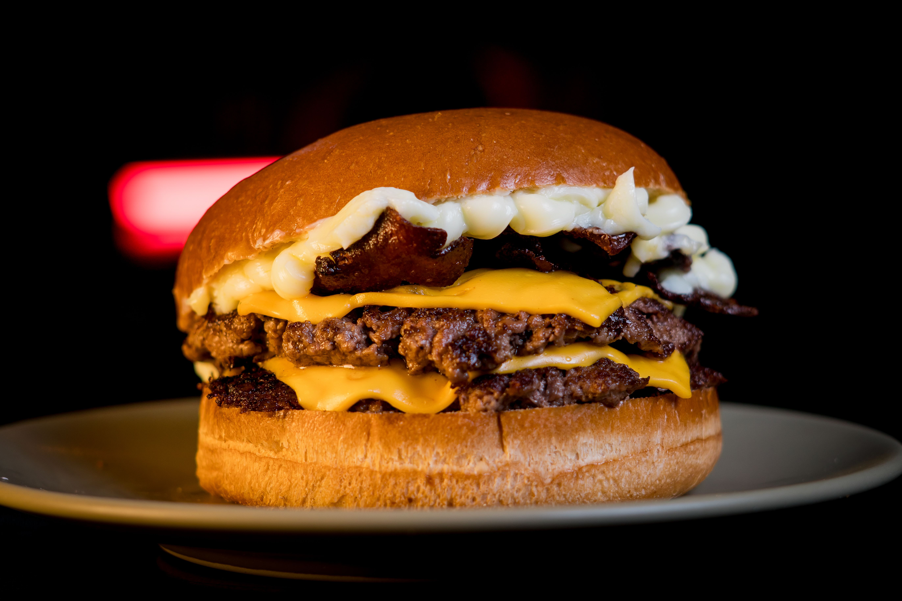

Nossa História
A história do Spyno Burguer começa antes mesmo da primeira chapa acesa. Tudo nasceu da obsessão de um pequeno grupo de amigos — chefs, cozinheiros de rua e verdadeiros caçadores de sabor — que acreditavam que o hambúrguer perfeito não era só uma receita, mas uma experiência capaz de marcar memórias.

Diz a lenda da cozinha (como eles mesmos gostam de contar) que a ideia surgiu numa madrugada chuvosa, quando três deles testavam combinações improváveis em uma cozinha apertada. Entre erros e acertos, nasceu algo diferente: um hambúrguer tão suculento e equilibrado que fez todos ficarem em silêncio por alguns segundos… antes de alguém dizer: “isso aqui não é só comida, isso é Spyno.”
A partir desse momento, o projeto deixou de ser apenas um sonho e virou missão.
O nome Spyno Burguer representa justamente essa filosofia: spy no sabor, uma busca constante e quase investigativa pela combinação perfeita entre ingredientes, textura e impacto. Nada entra no cardápio por acaso — cada item é testado, ajustado e aprovado como se fosse uma criação única, quase secreta.
Com o crescimento da marca, o Spyno deixou de ser apenas uma cozinha experimental e se transformou em um verdadeiro laboratório gastronômico. Cortes especiais de carne, blends exclusivos, pães artesanais desenvolvidos com padarias parceiras e molhos autorais que levam semanas para chegar na versão final fazem parte do padrão da casa.

Mas o que realmente diferencia o Spyno Burguer não está só na cozinha.
Existe uma filosofia interna chamada “A Primeira Mordida Conta Tudo”. Para eles, se o cliente não sentir impacto nos primeiros segundos, o hambúrguer ainda não está pronto. Isso levou a um nível quase obsessivo de qualidade: textura, temperatura, montagem e até o modo como o hambúrguer “se desfaz” na boca são cuidadosamente planejados.
Com o tempo, o Spyno Burguer virou mais do que um restaurante — virou um ponto de encontro. Pessoas não vão só para comer, mas para viver a experiência: luz baixa, clima urbano, trilha sonora envolvente e um atendimento que mistura proximidade com respeito pelo ritual da comida.
Hoje, o Spyno continua crescendo, mas sem perder a essência original: a busca incansável pelo sabor perfeito. E a cada novo hambúrguer lançado, a pergunta continua a mesma desde aquela primeira noite na cozinha apertada:
“Dessa vez… a gente chegou mais perto do perfeito?”